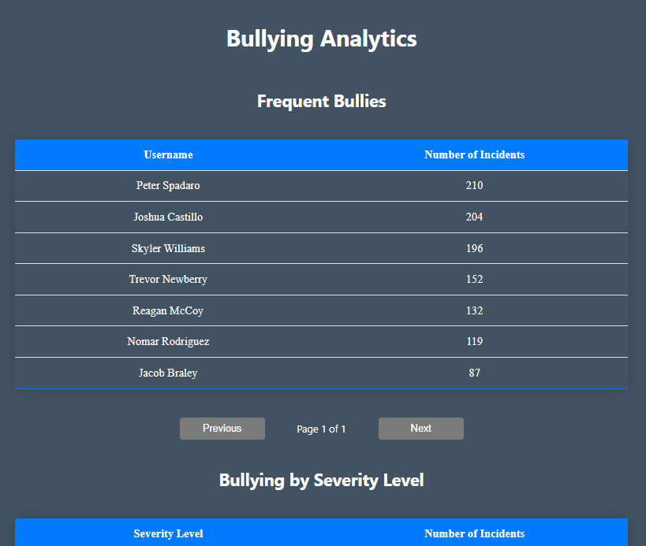
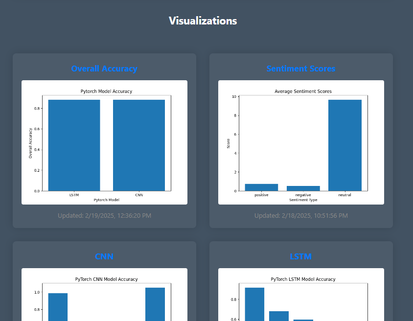
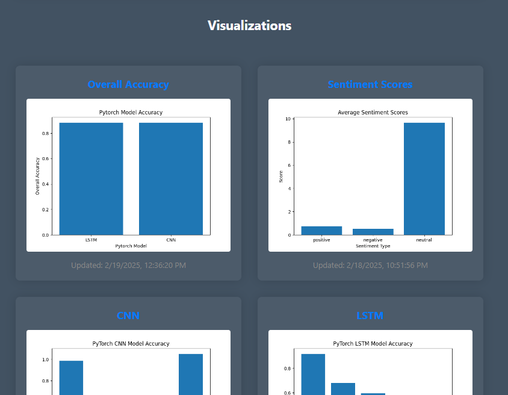
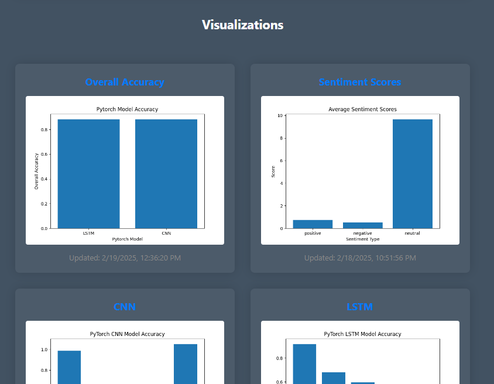

Process
Data Collection:
Preprocessing:
How the AI Works
- Tokenization – breaking up sentences into individual words or tokens
- Stop word removal – filtering out common words like "the", "is", "on", which don't add meaningful value for classification
- Lemmatization – simplifying words to their base or dictionary form (e.g., "running" becomes "run"), which helps models generalize better
Layman's Terms
The AI behind Bully Block is like a smart reader that carefully watches how students communicate online through Canvas. Here's how it works:
It Cleans Up What Students Write:
First, it reads the messages and cleans them up — taking out unnecessary symbols, lowercasing everything, and simplifying words so they’re easier to understand.
It Understands The Message:
The system looks at the grammar, what kind of words are used (like emotions or names), and what the message is really saying — kind of like how a teacher can tell if a student is joking or being mean.
It Decides How Serious The Message Is:
Based on tone and certain keywords, the AI gives the message a score — low, medium, or high — depending on whether it seems kind, neutral, or harmful.
It Trains Itself To Get Better:
The AI uses examples of past messages to learn. Some are obvious bullying, others are not. Over time, the AI learns patterns — kind of like how we learn from practice.
It Uses Multiple Brains:
We built different types of AI "brains" — some are fast and basic, others are deep thinkers. Then we compare how they each perform and keep improving them.
It Visualizes Its Learning:
The system shows charts and graphs that help us understand how well it’s learning and if it’s making mistakes — just like report cards!
It Cleans Up What Students Write:
First, it reads the messages and cleans them up — taking out unnecessary symbols, lowercasing everything, and simplifying words so they’re easier to understand.
It Understands The Message:
The system looks at the grammar, what kind of words are used (like emotions or names), and what the message is really saying — kind of like how a teacher can tell if a student is joking or being mean.
It Decides How Serious The Message Is:
Based on tone and certain keywords, the AI gives the message a score — low, medium, or high — depending on whether it seems kind, neutral, or harmful.
It Trains Itself To Get Better:
The AI uses examples of past messages to learn. Some are obvious bullying, others are not. Over time, the AI learns patterns — kind of like how we learn from practice.
It Uses Multiple Brains:
We built different types of AI "brains" — some are fast and basic, others are deep thinkers. Then we compare how they each perform and keep improving them.
It Visualizes Its Learning:
The system shows charts and graphs that help us understand how well it’s learning and if it’s making mistakes — just like report cards!
Technical Terms
The Bully Block system uses advanced Natural Language Processing (NLP) and machine learning techniques to detect and classify instances of cyberbullying in real-time.
Below is a detailed breakdown of the AI pipeline, including the purpose of each tool and how they are applied in our workflow.
Step 1: Text Preprocessing
To ensure messages are analyzed accurately, the system first refines raw text using a preprocessing pipeline powered by NLTK and spaCy.
NLTK (Natural Language Toolkit) is a Python library widely used for working with human language data. In our system, it handles:
spaCy is a modern NLP library optimized for performance and accuracy. It performs:
Step 1: Text Preprocessing
To ensure messages are analyzed accurately, the system first refines raw text using a preprocessing pipeline powered by NLTK and spaCy.
NLTK (Natural Language Toolkit) is a Python library widely used for working with human language data. In our system, it handles:
spaCy is a modern NLP library optimized for performance and accuracy. It performs:
BullyBlock Incident Reports
On the Incidents page, users can access a comprehensive table of all reported incidents. Reports can be filtered by
"Resolved" and "Pending Review" statuses. Each entry in the table includes:


- Content ID, User ID, and Username of the student involved
- Severity Level categorized as Low, Medium, or High
- Alert Status, indicating whether the incident has been addressed by school personnel
- Timestamp, displaying the exact date and time of the incident
Bullying Analytics
The Analytics page provides users with detailed insights into bullying incidents and visualizations of the
BullyBlock AI's performance. It includes:
- A ranked list of students based on the frequency of reported incidents
- An overview of bullying prevalence categorized by severity level
- A table highlighting key dates with the highest number of cyberbullying occurrences

 


Notifications
Notifications alert users to new cyberbullying incidents and status changes of previous cyberbullying incidents.

The process followed in BullyBlock involves multiple steps to ensure effective cyberbullying detection.
- Data Collection: Gathering user messages and interactions from Canvas LMS.
- Preprocessing: Cleaning and preparing text for analysis.
- Machine Learning Analysis: Running text through NLP models to detect bullying behavior.
- Alert System: Sending notifications if cyberbullying is detected.
- Review & Action: Educators and administrators review incidents for final action.